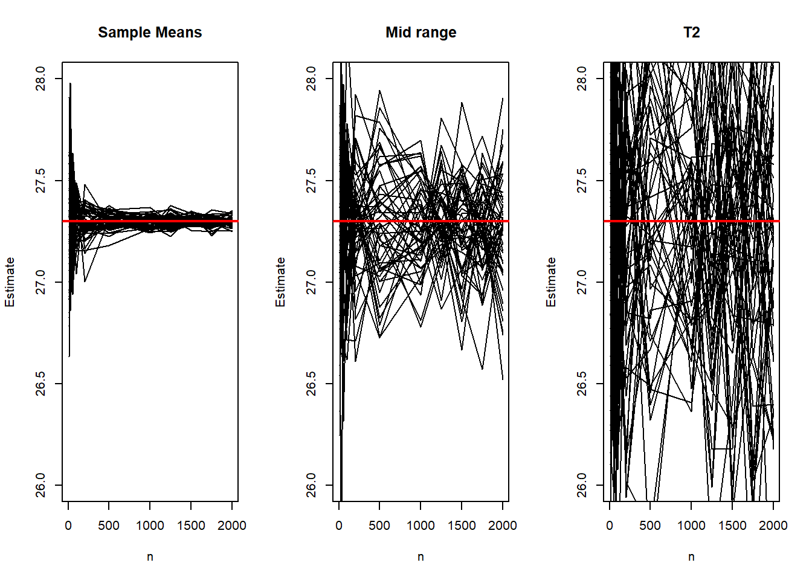
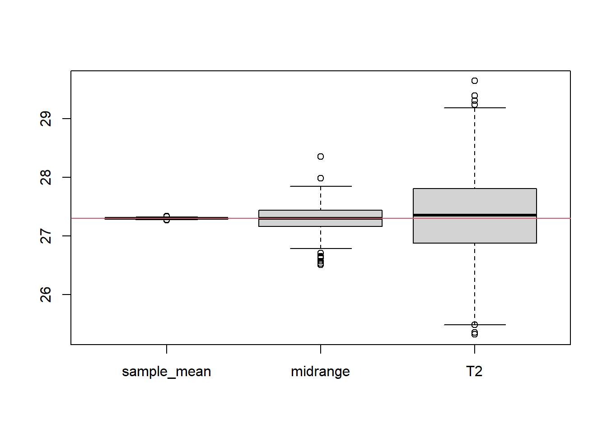
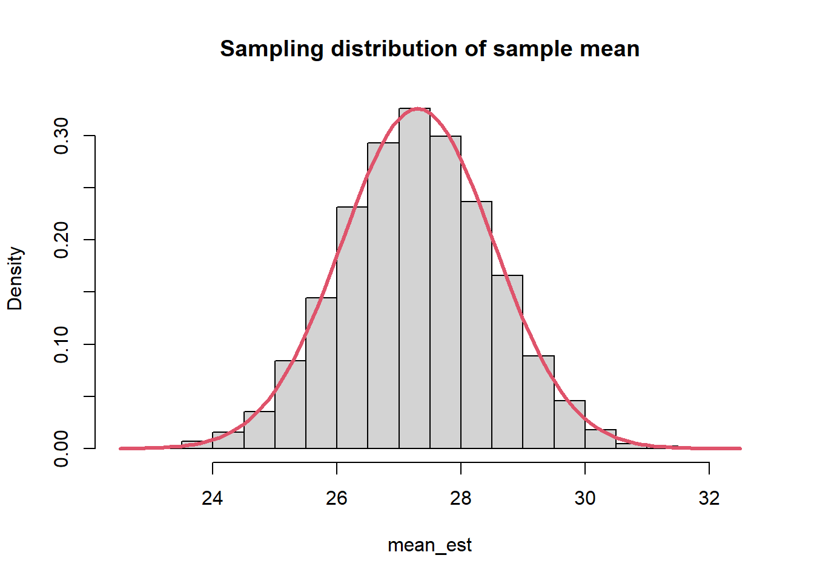
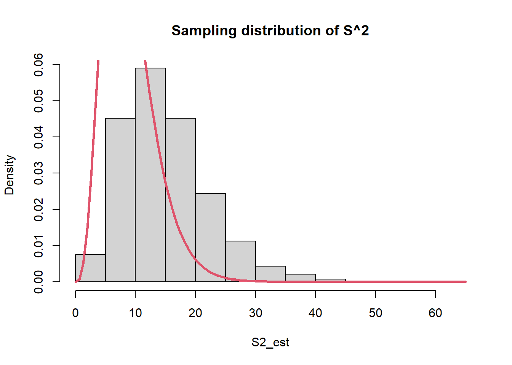
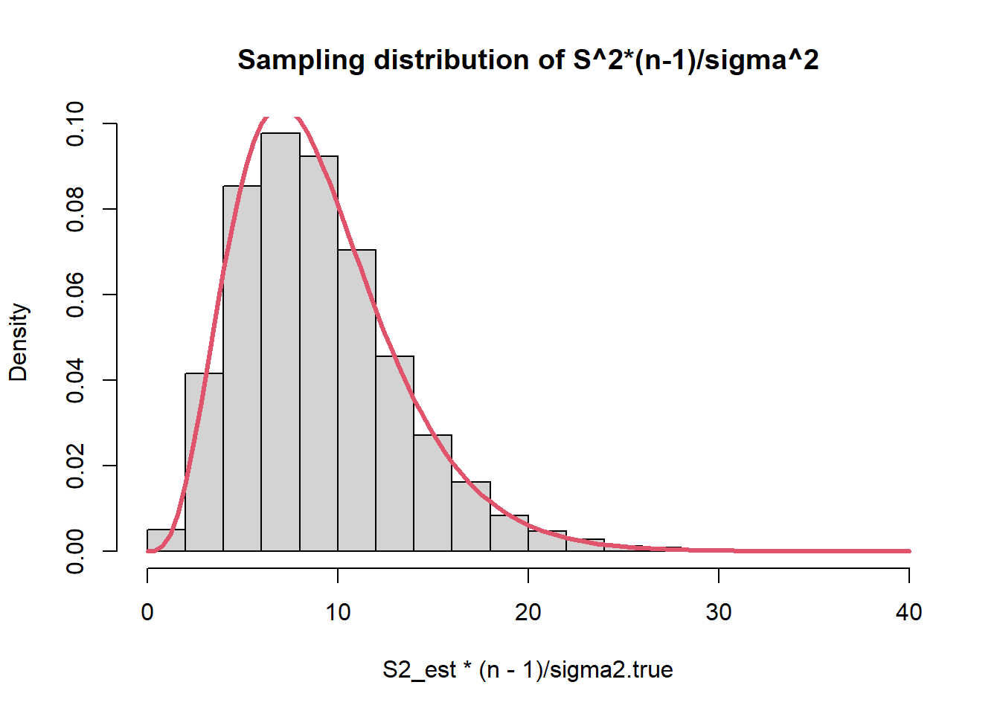
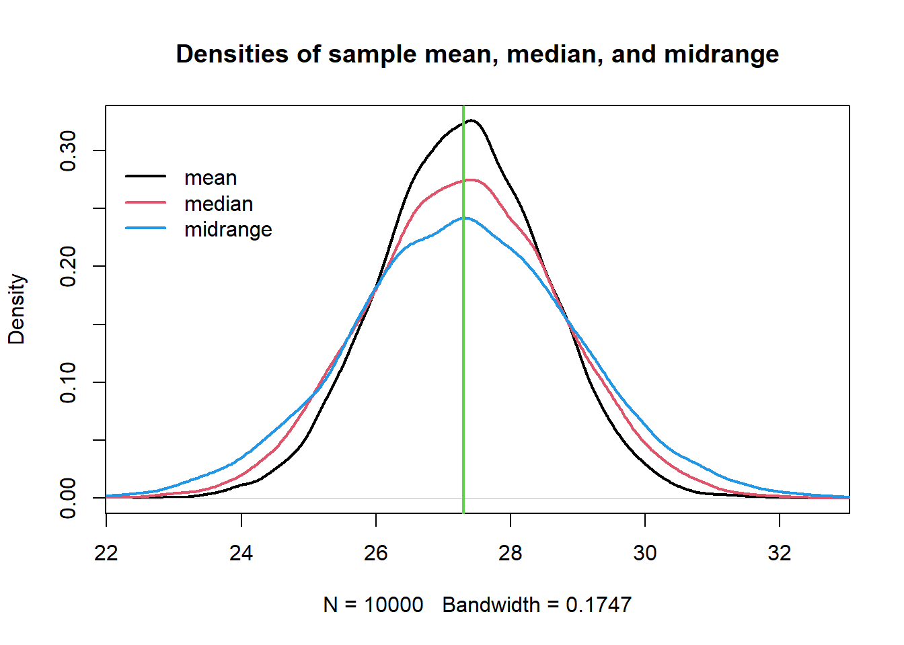
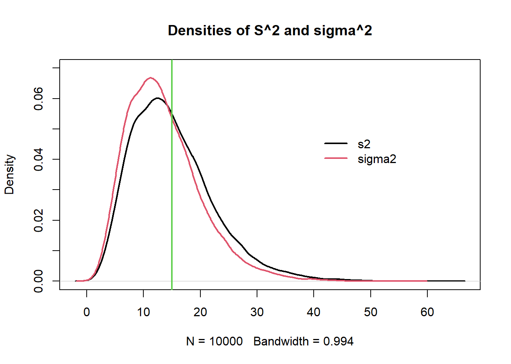
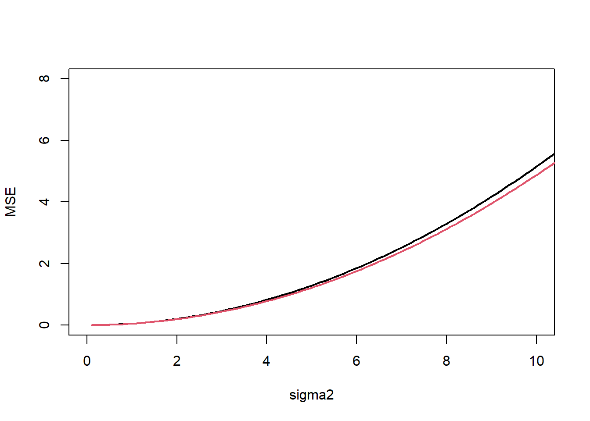
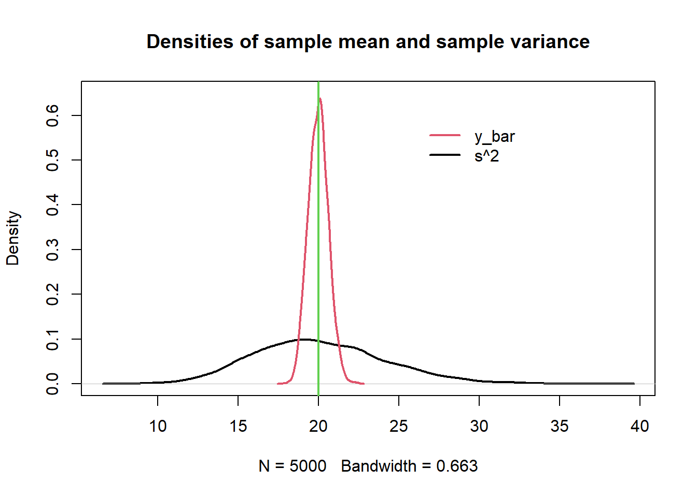
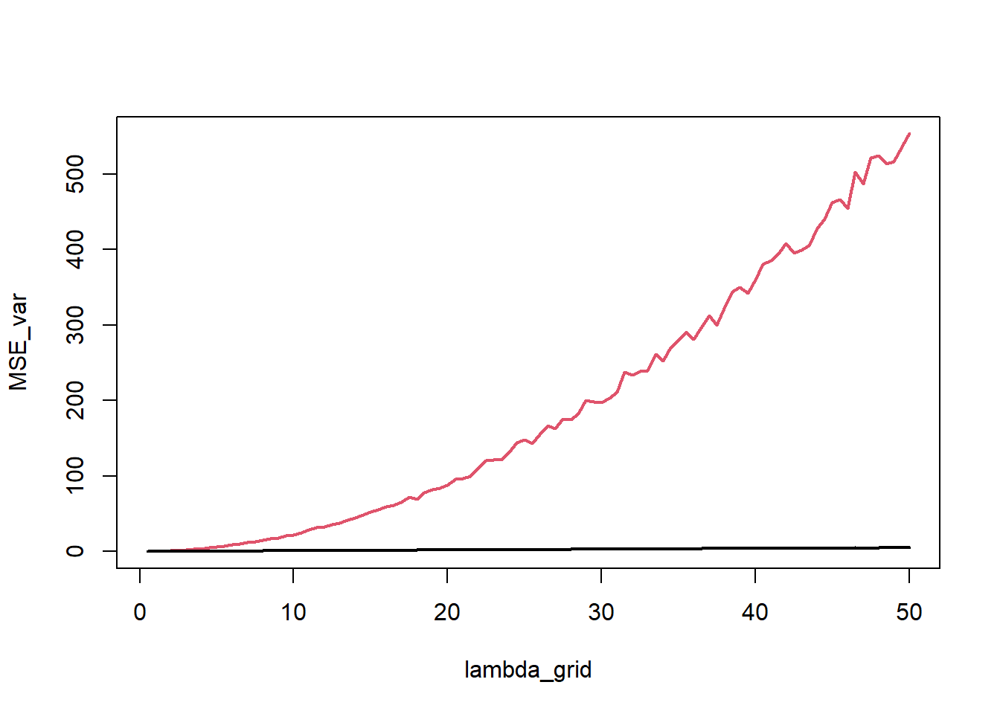

mu.true <- 27.3
sigma2.true <- 1
sample_sizes <- c(10, 25, 50, 100, 200,
500, 1000,1250, 1500, 1750, 2000)
B <- length(sample_sizes)
N_samples <- 50
mean_est <- matrix(NA, nrow=B, ncol=N_samples)
T_range <- matrix(NA, nrow=B, ncol=N_samples)
T_2 <- matrix(NA, nrow=B, ncol=N_samples)
set.seed(6)
for(i in 1:B){
for(j in 1:N_samples){
n <- sample_sizes[i]
y <- rnorm(n, mean=mu.true, sd=sqrt(sigma2.true))
mean_est[i,j] <- mean(y)
T_range[i,j] <- (min(y) + max(y))/2
T_2[i,j] <- (y[1] + y[n])/2
}
}
par(mfrow=c(1,3))
plot(sample_sizes, mean_est[,1], type="l", ylim=c(26,28),
main = "Sample Means", ylab = "Estimate", xlab = "n")
for(i in 2:N_samples){
points(sample_sizes, mean_est[,i], type="l")
}
abline(h=mu.true, col="red", lwd=2)
################################################
plot(sample_sizes, T_range[,1], type="l", ylim=c(26,28),
main = "Mid range", ylab = "Estimate", xlab = "n")
for(i in 2:N_samples){
points(sample_sizes, T_range[,i], type="l")
}
abline(h=mu.true, col="red", lwd=2)
################################################
plot(sample_sizes, T_2[,1], type="l", ylim=c(26,28),
main = "T2", ylab = "Estimate", xlab = "n")
for(i in 2:N_samples){
points(sample_sizes, T_2[,i], type="l")
}
abline(h=mu.true, col="red",lwd=2)
par(mfrow=c(1,1))
# Let's replicate the estimation procedure for n=10000
B <- 1000
mean_est <- numeric(B)
T_range <- numeric(B)
T_2 <- numeric(B)
for(i in 1:B){
y <- rnorm(10000, mean=mu.true, sd=sqrt(sigma2.true))
mean_est[i] <- mean(y)
T_range[i] <- (min(y) + max(y))/2
T_2[i] <- (y[1] + y[10000])/2
}
boxplot(cbind(sample_mean=mean_est,
midrange=T_range,
T2=T_2))
abline(h=mu.true, col=2)
##############################################
######## 1.2 - Comparing estimators: #########
##############################################
mu.true <- 27.3
sigma2.true <- 15
n <- 10
# Sampling distributions:
B <- 10000
mean_est <- numeric(B)
median_est <- numeric(B)
T_range <- numeric(B)
S2_est <- numeric(B)
sigma2_est <- numeric(B)
set.seed(6)
for(b in 1:B){
y <- rnorm(n, mean=mu.true, sd=sqrt(sigma2.true))
mean_est[b] <- mean(y)
median_est[b] <- median(y)
T_range[b] <- (min(y) + max(y))/2
S2_est[b] <- var(y)
sigma2_est[b] <- var(y)*(n-1)/n
}
hist(mean_est, prob=T, main="Sampling distribution of sample mean")
curve(dnorm(x, mu.true, sd=sqrt(sigma2.true/n)), col=2, lwd=3,add=T)
hist(S2_est, prob=T, main="Sampling distribution of S^2")
curve(dchisq(x, n-1), col=2, add=T, lwd=3)
hist(S2_est*(n-1)/sigma2.true, prob=T, main="Sampling distribution of S^2*(n-1)/sigma^2")
curve(dchisq(x, n-1), col=2, add=T, lwd=3)
# Expected values (approximated):
mean(mean_est)[1] 27.29257mean(median_est)[1] 27.28862mean(T_range)[1] 27.29507mean(S2_est)[1] 15.06223mean(sigma2_est)[1] 13.55601# Biases (approximated):
mean(mean_est) - mu.true[1] -0.007429892mean(median_est) - mu.true[1] -0.01138043mean(T_range) - mu.true[1] -0.004933008mean(S2_est) - sigma2.true[1] 0.06223293mean(sigma2_est) - sigma2.true[1] -1.44399# MSEs (approximated):
mean((mean_est - mu.true)^2)[1] 1.500696mean((median_est - mu.true)^2)[1] 2.061422mean((T_range - mu.true)^2)[1] 2.833997mean((S2_est - sigma2.true)^2)[1] 52.32536mean((sigma2_est- sigma2.true)^2)[1] 44.46551# Bias-variance trade-off (it holds for B >> 0, it is approximated):
mean((mean_est - mu.true)^2)[1] 1.500696(mean(mean_est) - mu.true)^2 + var(mean_est)*(B-1)/B[1] 1.500696# Other measures:
# MAEs (approximated):
mean(abs(mean_est - mu.true))[1] 0.9773448mean(abs(median_est - mu.true))[1] 1.146815mean(abs(T_range - mu.true))[1] 1.332213mean(abs(S2_est - sigma2.true))[1] 5.626325mean(abs(sigma2_est- sigma2.true))[1] 5.372079# ARB Absolute relative bias (approximated):
mean(abs(mean_est - mu.true)/mu.true)[1] 0.03580018mean(abs(median_est - mu.true)/mu.true)[1] 0.04200787mean(abs(T_range - mu.true)/mu.true)[1] 0.048799mean(abs(S2_est - sigma2.true)/sigma2.true)[1] 0.3750883mean(abs(sigma2_est- sigma2.true)/sigma2.true)[1] 0.3581386# Sampling Distributions:
plot(density(mean_est), main="Densities of sample mean, median, and midrange", lwd=2)
lines(density(median_est), col=2, lwd=2)
lines(density(T_range), col=4, lwd=2)
abline(v=mu.true, col=3, lwd=2)
legend(22,.3, legend=c("mean", "median", "midrange"), col=c(1:2,4), lty=1, lwd=2, bty = "n")
plot(density(S2_est), main="Densities of S^2 and sigma^2", ylim=c(0,0.07), lwd=2)
lines(density(sigma2_est), col=2, lwd=2)
abline(v=sigma2.true, col=3, lwd=2)
legend(40,.05, legend=c("s2", "sigma2"), col=1:2, lty=1, bty = "n", lwd=2)
#####################################################
##### 1.3 - Comparing estimators for variance: ######
#####################################################
# This function returns the MSE of S^2 and sigma2_hat
# approximated with B replicates
mse_normal_sigma2 <- function(mu, sigma2, n, B){
est_s2 <- numeric(B)
est_sigma2 <- numeric(B)
set.seed(42)
for(b in 1:B){
y <- rnorm(n, mu, sqrt(sigma2))
est_s2[b] <- var(y)
est_sigma2[b] <- ((n-1)/n)*var(y)
}
mse_s2 <- mean((est_s2-sigma2)^2)
mse_sigma2 <- mean((est_sigma2-sigma2)^2)
return(c(mse_s2, mse_sigma2))
}
mse_normal_sigma2(mu=10, sigma2=15, n=10, B=50)[1] 46.76627 41.98079# Grid of values for (the true) sigma2
sigma2_vector <- seq(0.1, 50, by=0.1)
B <- 1000
mse_s2 <- numeric(length(sigma2_vector))
mse_sigma2 <- numeric(length(sigma2_vector))
for(s in 1:length(sigma2_vector)){
mse <- mse_normal_sigma2(10, sigma2_vector[s], 40, B)
mse_s2[s] <- mse[1]
mse_sigma2[s] <- mse[2]
}
plot(sigma2_vector, mse_s2, pch=20,
type="l", ylab="MSE", xlab="sigma2", lwd=2, xlim=c(0,10),
ylim=c(0,8))
points(sigma2_vector, mse_sigma2, pch=20, type="l", col=2, lwd=2)
legend(0,150, legend=c("S2", "sigma2_hat"), col=c(1,2), lty=1, bty="n", lwd=2)
################################################
##### 1.4 - Comparing estimators Poisson: ######
################################################
lambda <- 20
n <- 50
B <- 5000
est_mean <- numeric(B)
est_s2 <- numeric(B)
set.seed(369)
for(b in 1:B){
y <- rpois(n, lambda)
est_mean[b] <- mean(y)
est_s2[b] <- var(y)
}
mse_mean <- mean((est_mean-lambda)^2); mse_mean[1] 0.3946222mse_s2 <- mean((est_s2-lambda)^2); mse_s2[1] 16.37713plot(density(est_s2), main="Densities of sample mean and sample variance",
ylim=c(0,.65), lwd=2)
lines(density(est_mean), col=2, lwd=2)
abline(v=lambda, col=3, lwd=2)
legend(26,.6, legend=c("y_bar", "s^2"), col=2:1, lty=1, bty = "n", lwd=2)
n <- 10
B <- 5000
lambda_grid <- seq(0.5, 50, by=.5)
MSE_mean <- numeric(length(lambda_grid))
MSE_var <- numeric(length(lambda_grid))
for(l in 1:length(lambda_grid)){
stime_media <- numeric(B)
stime_var <- numeric(B)
for(b in 1:B){
x <- rpois(n, lambda=lambda_grid[l])
stime_media[b] <- mean(x)
stime_var[b] <- var(x)
}
MSE_mean[l] <- mean((stime_media - lambda_grid[l])^2)
MSE_var[l] <- mean((stime_var - lambda_grid[l])^2)
}
plot(lambda_grid, MSE_var, type="l", col=2, lwd=2)
points(lambda_grid, MSE_mean, type="l", lwd=2)